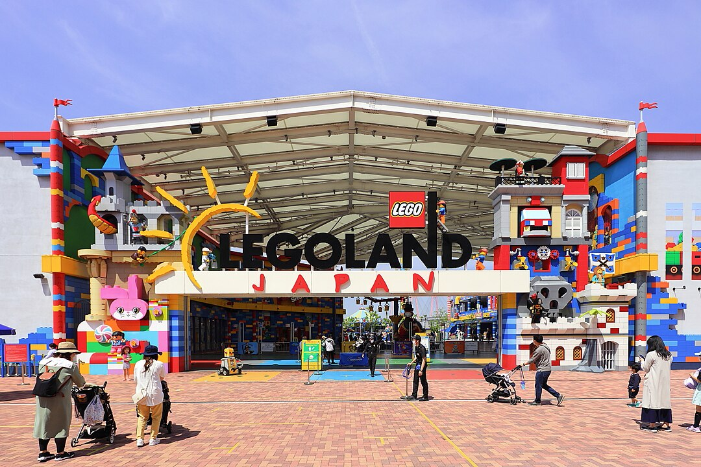

レゴランド ジャパン

On June 30, 2014, Merlin Entertainments announced plans to open a Legoland Resort in Nagoya. Construction officially began on April 15, 2015. With a budget of USD $250 million, construction was implemented by Art and Project, TAA Group and Tejix. The nine-hectare (22.24 acre) park is located in Nagoya's Minato Ward and contains seven areas. It has over 40 attractions and uses approximately 17 million bricks. Attractions include Imagination Celebration, completed on March 12, 2017, and Lego-brick cityscapes of places like Tokyo and Nagoya, which were completed on March 17, 2017. On March 27, 2017, a commemorative Lego-themed train began running on the Nagoya Rinkai Rapid Transit Aonami Line to celebrate the park's opening. The commuter train, named Legoland Train, began daily service on the Aonami Line, traveling from central Nagoya to the new theme park. Merlin Entertainments announced plans to build a Legoland Hotel and a Sea Life aquarium next to the park in 2018 to help transform the area into a resort, which was expected to cost JPY¥10 billion. On December 1, 2017, Legoland Hotel began accepting reservations for its grand opening on April 28, 2018. The opening of Sea Life Aquariums was set for April 15, 2018. On February 28, 2020, the park was closed due to the COVID-19 pandemic. The park reopened on March 23, 2020, with limited services, reduced business hours, mask mandates and mandatory temperature checks. Lego Ninjago Live, the Observation Tower, Submarine Adventure, The Coral Reef buffet, and the Knight's Table restaurant were not in operation.
Park Location
Themed areas of discovery within the resort include:
- Bricktopia (ブリックトピア)
- Miniland (ミニランド)
- Adventure (アドベンチャー)
- LEGO City (レゴシティ)
- Knight's Kingdom (ナイトキングダム)
- Pirate Shores (パイレーツショア)
- Factory (ファクトリー)
Bricktopia
Bricktopia Bricktopia includes the robotic workshops Build and Test and Lego Creative, where park goers can learn to build and program their robots. Lego Ninjago Live offers guests a 4D interactive experience. Other interactive Bricktopia attractions include DUPLO Play, DUPLO Express, Imagination Celebration and Observation Tower. The Chicken Diner offers chicken meals and sandwiches, while Pino Cart offers Pino ice cream in a Lego souvenir box.
Miniland
Located at the center of the park, Miniland features many popular tourist attractions from across Japan built from LEGO bricks, including locations in Tokyo, Osaka, Kyoto and Nagoya. 10,496,352 LEGO bricks were used to recreate the Japanese locations.
Adventure
The Adventure area includes interactive games and maze-like areas for children's play. It is located on the east side of the park along with the park's underwater attractions. Rides in this area include Submarine Adventure, S.Q.U.I.D. Surfer, Cargo Ace and Beetle Bounce. The Coral Reef Pizza and Pasta Buffet, Artifact Shop, Sub Shop and Oasis Snacks are also located in this area of the park.
Lego City
Lego City is located on the park's north side and has activities such as Junior Driving School, Coast Guard HQ and Rescue Academy. In this area of the park, guests learn to drive an electric car, take the wheel during a boat ride and work together to put out fires. The Lego Cinema plays Lego films and shopping is available in Studio Store, Heartlake Shop and City Shop. Pit Stop Juice ‘n’ Drive, Brick House Burgers and Marina Snack Shack offer snacks and lunch.
Knight's Kingdom
The Knight's Kingdom is found on the park's northwest side. The medieval-themed area includes roller coasters like Dragon and Dragon's Apprentice, as well as attractions including Merlin's Flying Machines, Merlin's Challenge and Kingdom Games. Shops include King's Market and Knight's Table Restaurant.
Pirates Shores
Pirate Shores is surrounded by water with activities including Splash Bottle, Castaway Camp, Anchors Away! and Blue Coat Games. The Lost Booty Trading Post is a gift shop in this area offering souvenirs.
Factory
The Factory is located on the park's southwest side, containing The Lego Factory Tour. The Lego Story, displayed along the walls, shares Lego and Legoland history with park visitors as they walk through the factory's corridors. On display is the machinery that creates various Lego pieces used throughout the park. After the tour, visitors receive a new Lego piece from the production line as a souvenir. All photos taken in the park can be picked up at The Photo Shop, which offers a limited edition Legoland photo album. The Corner Shop provides stroller and wheelchair services and sells sundries and other useful goods. Souvenirs purchased in the park can be dropped off here and picked up upon leaving the park. Other shops and restaurants include Big Shop, Ice Factory and Factory Sandwich Company.